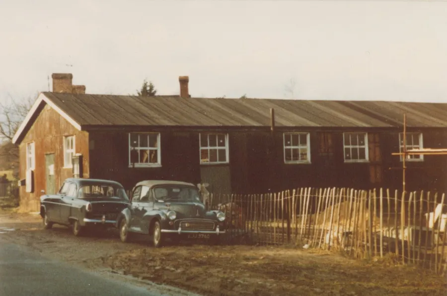
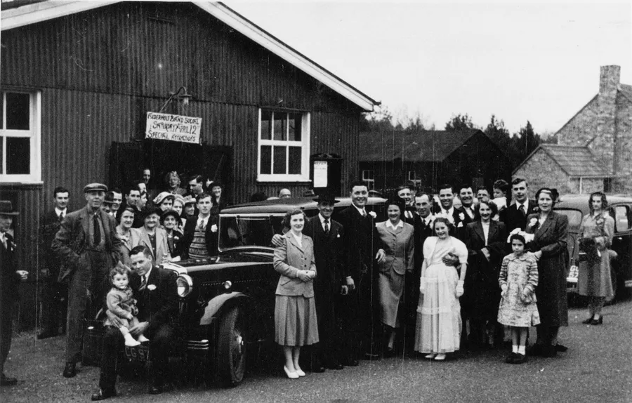
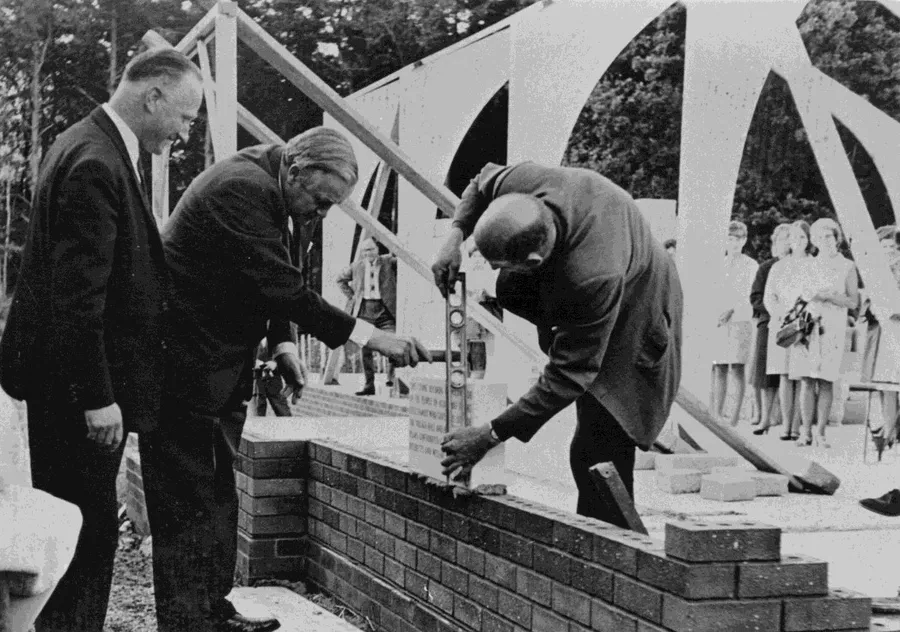
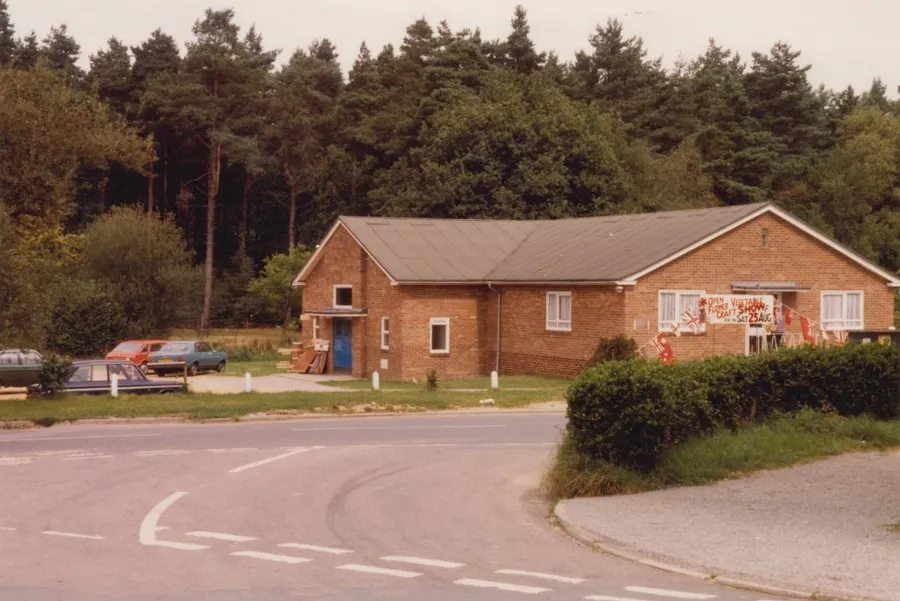
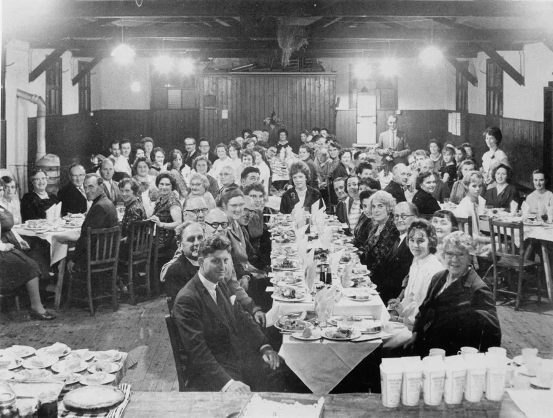

The Village Hall
by Adrian King

The village hall was a large green wooden building built in the early 1920’s on land given to the village by the Cecil family using two old 1914–18 army huts with heather hauled from Cranborne Common for the foundations. It was nearing completion in July 1922 and ready by the following year.
Don Hibberd says that his father Fred Hibberd had helped to erect it and he had found that some of the timbers were of such bad quality that he refused to use them. Help was also given by the British Legion. The management committee reported in November 1923 that the outstanding debt had been reduced to well under £100.

It was hoped that the financial obligation to Mr. Mills who it is assumed leant money for the project would be cleared away. But in the event it was not fully repaid until after November 1926.
In the Parish News from November 1923 Horace Henry Coley who was the vicar was generally pleased with the way things were going but called the boasting of some people that they had got into events without paying “A despicable business and disgraceful.”
He said “It would be a pity if the management committee had to buy an iron turnstile. I would recommend a cheaper remedy — to dig a deep pond and try a little ducking on the offenders!”
In 1926 there were problems getting a committee for running the hall. A committee was eventually formed after a couple of public meetings where only a handful of people came.
At the back of the building was a hollow surrounded by logs forming a swimming pool. It was fed by the stream which runs through the car park. It is not known if it was ever used. Or if miscreants were ducked in it!
During the Second World War the hall was used as a dining hall for troops billeted in the village.
The Royal Ordnance Corps (R.O.A.C.) also had their headquarters in the hall.

Stan Broomfield said that
“After World War II with the formation of Alderholt Rifle club in the 1947 the club was given permission to create a firing target butts under the stage with a 15-yard range. Licence approved from the MOD”
In 1967 a building at the Daggons Road Brickyard Site was converted to a 25-metre range.
By 1957 the hall had deteriorated to such an extent that the management committee decided that it would be too expensive to repair so a fund was set up for a new hall. There was a five-year target of £4,000.
In 1967 with the help of loans and a grant from the government work started on the new building and the foundation stone was laid. Lord Cranborne officiated. The new hall was built by Mr. Lockyer a local builder and was officially opened on 13th January 1968.

Because of illness the Marquis of Salisbury had been unable to attend the opening and his grandson Robert Cecil officiated instead.
At the opening Robert Cecil quoted the words from his grandfather who had first come to the village in 1902. “The Hall is the heart of the place, where young and old meet and where the pulse beats most strongly.” After the ceremony Mr. Cecil received a scroll giving him the freedom of the Hall from Mrs. Jean Pattle who was secretary of the Hall Management Committee.
Over the years there have been additions and improvements which would not have been possible without the support of the local community and grants and donations from the Parish, District and County Councils.

At a small ceremony on 26th November 2004 Lord and Lady Salisbury opened the newly refurbished kitchen facilities. £9,000 had been raised and representatives from the councils, organizations and individuals who had so generously contributed to the fundraising attended the ceremony.
In his short speech Lord Salisbury referred to the last time he had visited the village, when as a young man he had deputised for his grandfather, the then Lord Salisbury, at the official opening of the Hall.
An event was held on 23rd June 2018 to celebrate the 50th anniversary of the hall being built.
The current Lord Salisbury who opened the hall in 1968 returned to officiate and unveiled a 2.5 metre tapestry depicting Alderholt scenes and life that had been created by the local Knit and Natter Group. It is now a permanent feature in the hall. The local MP Simon Hoare also attended. There were displays of old pictures of the original and new halls.

The Hall is run by a Committee with Trustees and Village Group representatives.
| Officers on the committee in 2004/5 | |
|---|---|
| Dr. John Hensel | President |
| Lawrence Fordham | Chairman and Treasurer |
| Norman Jones | Vice Chairman |
| Elizabeth Edmunds | Secretary |
| Vi Male | Letting Officer |
| Officers on the committee in 2023/4 | |
|---|---|
| Norman Jones | President |
| Graeme Thorley | Chairman |
| Chris Walker | Vice Chairman |
| Wendy Hood | Secretary |
| Tina Huntley | Treasurer |
| Lyn Lyons | Committee / Market Manager |
| Faye Pottle | Committee / Café Manager |
| Naomi White | Social Media |
| Dave Watson | Maintenance Manager |
| Jo Anderson | Trustee |
| Adrian Hibberd | Trustee |
| Kate Mason | Trustee |
| Jean Mortimer | Trustee |